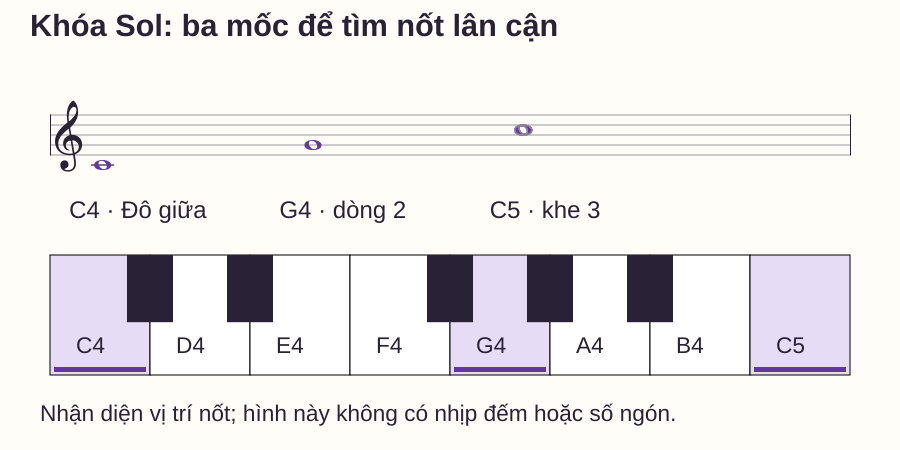
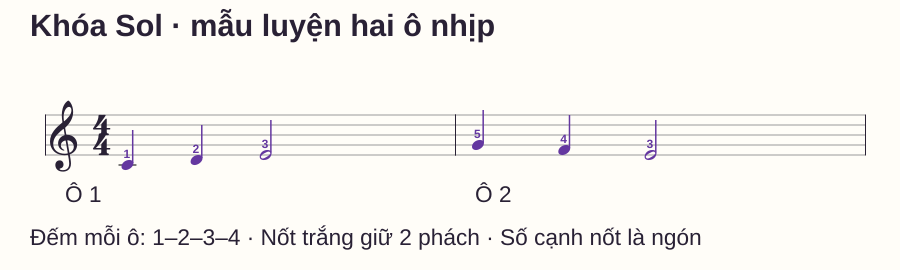
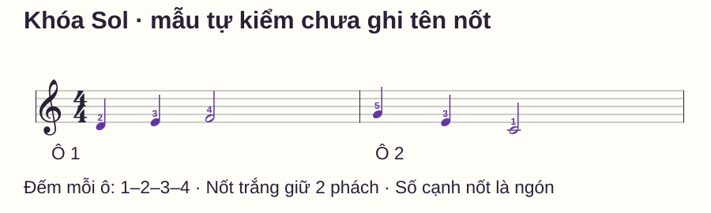

Đọc nhạc
Cách đọc khóa Sol trên piano bằng ba nốt mốc đầu tiên
# Cách đọc khóa Sol trên piano bằng ba nốt mốc đầu tiên
Bạn nhìn thấy một nốt trên khuông Sol nhưng phải đọc lại từ dòng thấp nhất mới gọi được tên. Đến khi tìm đúng phím, nhịp đã trôi qua. Vấn đề không nhất thiết là bạn nhớ kém: có thể bạn đang dùng một đường đếm quá dài cho mọi nốt.
Trong bài này, bạn sẽ nhận ba mốc C4, G4 và C5, rồi tìm nốt gần chúng. Có hình khuông–bàn phím, một mẫu hai ô nhịp và một mẫu tự kiểm khác thứ tự. Bạn có thể đọc chậm, thử ngay trên đàn và kiểm lại mà không cần mở ứng dụng.
Trả lời nhanh
Khóa Sol xác định nốt G4 ở dòng thứ hai tính từ dưới lên. Để bắt đầu đọc piano, học thêm C4 trên dòng kẻ phụ đầu tiên dưới khuông và C5 ở khe thứ ba. Nhìn vị trí tâm đầu nốt để phân biệt dòng với khe, chọn mốc gần nhất rồi đi qua từng vị trí liền nhau theo tên nốt. Sau khi gọi đúng tên và quãng tám, tìm phím tương ứng; số ngón là thông tin riêng. Tập đọc vị trí trước, sau đó thêm trường độ vào mẫu ngắn. Chỉ tăng tốc khi bạn xác định được nốt tiếp theo mà không phải đếm lại toàn bộ khuông hoặc dừng giữa ô.
Khóa Sol cho bạn biết điều gì?
Khuông nhạc thường có năm dòng và bốn khe giữa các dòng. Khi nói dòng 1, dòng 2 hay khe 1 trong bài, ta đếm từ dưới lên. Khóa là ký hiệu đầu khuông xác định các vị trí ấy tương ứng cao độ nào; riêng khóa Sol quy chiếu dòng 2 với G4, tức Sol phía trên Đô giữa.
Định nghĩa vị trí G của khóa Sol được giải thích trong OpenLearn — Clefs. Điều cần thực hành là dùng vị trí đầu nốt cùng ký hiệu khóa để xác định phím, thay vì chỉ nhìn hình đuôi hoặc hướng thân nốt.
Ở đây C = Đô, D = Rê, E = Mi, F = Fa, G = Sol, A = La, B = Si. Các ví dụ không có dấu hóa nên dùng phím trắng. Trong bản nhạc khác, dấu thăng, giáng hoặc hóa biểu có thể thay đổi phím cần chơi; học tên vị trí chưa phải đã đọc hết thông tin của nốt.
Ba nốt mốc và phím tương ứng

| Mốc | Chỗ đặt đầu nốt trên khóa Sol | Phím cần tìm |
|---|---|---|
| C4 · Đô giữa | Dòng kẻ phụ đầu tiên dưới khuông | Đô giữa |
| G4 · Sol | Dòng 2 tính từ dưới | Sol phía trên C4 |
| C5 · Đô cao hơn | Khe 3 tính từ dưới | Đô cao hơn C4 một quãng tám |
C4 là quy ước Đô giữa dùng trong bài; C5 là Đô kế bên về phía âm cao. Tìm mỗi Đô ở bên trái nhóm hai phím đen, rồi kiểm vùng đàn thay vì chỉ nhận chữ C. Một số thiết bị dùng cách đánh số quãng tám khác; hãy đối chiếu vị trí thực tế nếu nhãn màn hình không giống bài.
Ba mốc này là bộ khởi đầu của bài, không phải danh sách bắt buộc cho mọi phương pháp piano. Chưa cần thuộc cả khuông mới thử mẫu C–D–E bên dưới.
Tìm nốt quanh mốc mà không bỏ qua khe
Đi từ một vị trí dòng sang khe kế bên hoặc từ khe sang dòng kế bên là đi sang tên nốt liền kề. Quanh G4, trình tự đi lên là G4–A4–B4–C5; đi xuống là G4–F4–E4–D4–C4. Không nhảy thẳng từ một dòng sang dòng kế rồi vẫn coi đó là một bước tên nốt.
Ví dụ, đầu nốt nằm ngay khe dưới dòng G4 là F4. Đầu nốt ở dòng ngay dưới G4 là E4: bạn đã đi qua F4 trước khi tới E4. Từ C5 ở khe 3, xuống một vị trí là B4 trên dòng 3; lên một vị trí là D5 trên dòng 4.
Hãy nói cả vị trí và tên: “khe dưới G4, F4”. Lời giải này cho biết bạn đã nhìn thấy gì, dễ kiểm hơn việc chỉ đoán “Fa”.
Phương pháp đọc trong bốn bước
- Nhìn khóa rồi nhìn tâm đầu nốt. Tâm nằm trên dòng hay trong khe? Đừng lấy đầu thân nốt làm vị trí cao độ.
- Chọn một mốc đã chắc. Với nốt thấp gần C4, dùng C4; ở giữa khuông, thử G4; gần C5, dùng C5.
- Xác định nốt và vùng đàn. Gọi D4 thay vì chỉ “Rê” khi có nguy cơ chọn nhầm quãng tám. Tìm đúng phím trước khi quan tâm chơi nhanh.
- Thêm thời gian và ngón. Đọc độ dài, số ngón gợi ý rồi thử một ô. Không gán ngón 1 cho mọi nốt C ở mọi câu.
Cách tách nhận nốt khỏi ngón phù hợp với nguyên tắc đọc của Piano Adventures. Các mẫu dưới đây do website biên soạn riêng, không trích bài trong giáo trình này.
Bài tập: đọc một mẫu hai ô nhịp

| Ô | Phách 1 | Phách 2 | Phách 3–4 |
|---|---|---|---|
| 1 · tay phải | C4 · ngón 1 | D4 · ngón 2 | E4 · ngón 3, giữ hai phách |
| 2 · tay phải | G4 · ngón 5 | F4 · ngón 4 | E4 · ngón 3, giữ hai phách |
Ngón 1 là ngón cái, 2 trỏ, 3 giữa, 4 áp út, 5 út. Đặt tay phải trong vùng C4–G4; mẫu này không yêu cầu với từ C4 tới C5. Mốc C5 ở phần nhận diện được học riêng, không phải nốt phải giữ dưới cùng vị trí tay.
Lượt đọc: chưa chơi, chỉ từng đầu nốt và gọi tên với vùng đàn. Dùng mốc nào cũng được nếu bạn kiểm được đường đi và kết quả.
Lượt gõ: đếm 1–2–3–4; gõ tiếng ở 1, 2 và 3, không gõ thêm tiếng ở 4. Trên đàn, nốt ở 3 vẫn được giữ qua phách 4; gõ bàn chỉ biểu thị điểm bắt đầu, không tạo âm ngân như piano.
Lượt đàn: đếm một ô chuẩn bị, chơi đủ hai ô, nhả E4 cuối khi tới số 1 của ô 3. Thử hai lần có khoảng đặt lại. Có thể thử khoảng 50 phách/phút, một click mỗi phách; nếu phải đoán nốt, tập riêng đọc vị trí rồi chọn tốc độ thấp hơn hoặc chỉ một ô.
Không kéo dài riêng một phách để tìm phím rồi coi cả câu đã giữ nhịp. Một lượt tìm hiểu có thể dừng có chủ ý; lượt kiểm tra thời gian cần chạy liên tục ở tốc độ phù hợp.
Tự kiểm bằng một mẫu chưa ghi tên

Chỉ từng nốt, gọi tên và chọn phím trước. Nếu đang luyện đọc nốt, hãy tạm che các số ngón: chúng là hỗ trợ chuyển động, không phải đáp án cao độ. Bạn có thể đọc không máy đếm nhịp ở lượt đầu.
Mở đáp án và số ngón
Ô 1: D4–E4–F4, ngón 2–3–4. Ô 2: G4–E4–C4, ngón 5–3–1. Mỗi ô có trường độ 1 + 1 + 2 phách. Nhả C4 cuối ở số 1 của ô tiếp.
Nếu gọi đúng vị trí nhưng bấm nhầm quãng tám, luyện nối nốt với phím. Nếu tên nốt đã sai trước khi chạm đàn, quay lại mốc và phân biệt dòng/khe. Đừng sửa hai vấn đề bằng cùng lời nhắc “tập nhiều hơn”.
Lịch đọc nhạc mười phút
- Phút 0–2: nhận ba mốc theo thứ tự thay đổi, nối với phím; chưa chạy gam.
- Phút 2–4: gọi tên sáu đầu nốt của mẫu luyện, chỉ rõ mốc đang dùng.
- Phút 4–6: gõ rồi chơi hai ô hai lượt ở tốc độ kiểm soát được.
- Phút 6–8: đọc mẫu tự kiểm trước khi mở đáp án; ghi một chỗ sai cụ thể.
- Phút 8–10: sửa đúng loại lỗi và thử lại một ô; kết thúc bằng một lượt chậm rõ ràng.
Lỗi thường gặp
Đếm dòng từ trên xuống. Trong hướng dẫn này, các số dòng/khe đều tính từ dưới. Kiểm lại G4 ở dòng 2 trước khi dùng mẹo ghi nhớ.
Lấy hướng thân nốt để đoán cao thấp. Cao độ nằm ở tâm đầu nốt; thân quay lên hay xuống không đổi một E4 thành nốt khác.
Nhớ ngón thay vì đọc nốt. Một mẫu thuộc tay có thể vẫn trôi khi bạn không đọc sheet. Dùng mẫu tự kiểm và che ngón ở lượt gọi tên để phân biệt hai việc.
Nhả nốt trắng ở phách 4 thay vì giữ qua 4. Đếm tới số 1 tiếp rồi mới nhả nốt cuối; ở giữa câu, đổi sang nốt mới đúng thời điểm bắt đầu ô sau.
Khi nào học tiếp?
Bạn có thể mở rộng khi nhận được ba mốc ở thứ tự bất kỳ, đọc sáu nốt của mẫu tự kiểm không sai vùng đàn và chơi mỗi ô đủ bốn phách ở một tốc độ ổn định. Tiêu chí thuộc mẫu không thay thế phép thử với thứ tự mới.
Nếu cần ôn phím, xem cách nhận biết bàn phím piano. Nếu phần khó nằm ở thời gian giữ, xem cách đếm nhịp. Bước học tiếp là đọc phần trầm ở khóa Fa rồi đặt hai khuông lên cùng dòng thời gian; không cần học hết mọi dòng kẻ phụ trước.
Câu hỏi thường gặp
Có cần thuộc E–G–B–D–F trước không?
Đó là tên năm dòng khóa Sol từ dưới lên và có thể dùng để kiểm lại. Bài này bắt đầu bằng mốc để bạn không phải đọc cả dãy cho từng nốt.
Khóa Sol có luôn dành cho tay phải không?
Không. Trong nhiều bài nhập môn, tay phải đọc khuông Sol, nhưng khóa xác định cao độ; cách chia tay có thể thay đổi theo bản nhạc.
C4 có nằm trên dòng thấp nhất của khuông không?
Không. Dòng thấp nhất là E4. C4 nằm trên dòng kẻ phụ đầu tiên bên dưới; D4 ở khoảng giữa C4 và E4.
Có được ghi tên nốt lên sheet không?
Có thể ghi ở chỗ chưa rõ để kiểm lại. Sau đó thử một lượt không dựa vào chữ ghi hoặc dùng mẫu mới, thay vì ghi toàn bộ rồi chỉ đọc chữ.
Tôi nhận nốt đúng nhưng tay chậm, có phải đọc chưa tốt?
Có thể khâu nối từ ký hiệu sang phím còn chậm. Tách lượt gọi tên khỏi lượt đàn để biết sai ở đâu, rồi giảm tốc độ của bài thực hành.
Nên chuyển sang C5 bằng cách giãn tay không?
Không cần. Khi chỉ nhận diện mốc, nhấc và đặt lại tay để tìm C5. Mẫu luyện trong bài chỉ ở C4–G4, chưa yêu cầu giữ tư thế trải cả quãng tám.
Nguồn và ghi chú biên soạn
Đối chiếu quy ước ký âm với The Open University — Clefs và musictheory.net — Staff, Clefs and Ledger Lines. Tham khảo cách tách nhận nốt và số ngón trong Piano Adventures — Approach to Reading. Hình, hai mẫu nhạc, bảng lỗi và lịch tập là nội dung gốc của website; không sao chép hình hoặc bài tập nguồn. Các tiêu chí tự kiểm chưa được thử nghiệm với người học độc lập.